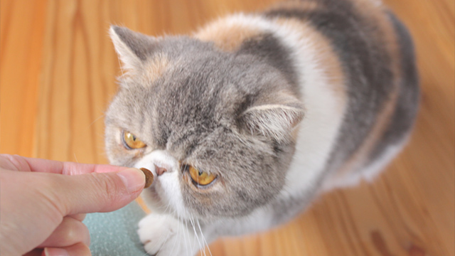
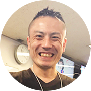
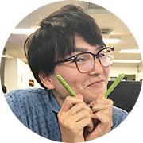

Pick up
野十郎さんのお食事事情。
2014年5月21日
野十郎さんのゴハンは、朝にはカリカリにお肉（赤身やササミ）を混ぜたもの。昼は自分でお皿にあるものを好きな時間に。夕方１８時にオヤツ（シーバなど）夜にはまたカリカリにしたお肉。
飼育員さん

ごとうさん
好きな猫種はアメリカンショートヘア。マンチカンも捨てがたい。

ふじさわさん
好きな猫種はエキゾチックショートヘア。野十郎がお気に入り。